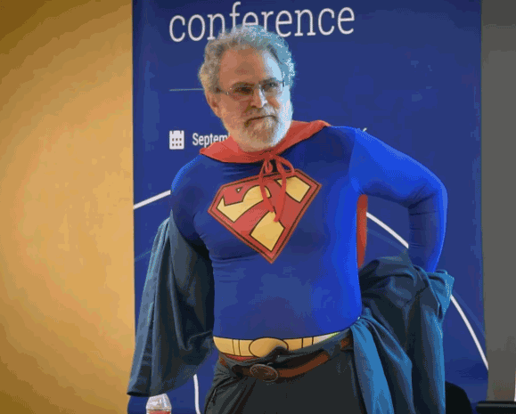
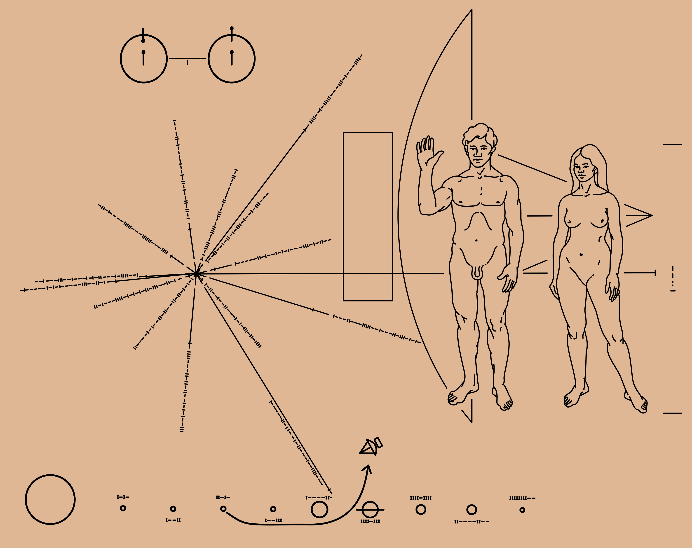

Essa aula não é sobre:
… que muitas vezes são derivados de “precisa ter faculdade pra trabalhar com programação?”
Vocês estão cursando Ciência da Computação, então independente disso tudo, vão sim aprender uma base lógica/matemática.
Como matemática e programação se relacionam, e a importância de entender as diferenças.
Vamos trabalhar com ambos no mesmo ambiente, e o domínio sobre quando usar uma perspectiva ou outra é a principal habilidade para se escrever uma boa especificação formal.
No geral, nós, programadores, tendemos à perspectiva da programação, e precisamos nos esforçar para descrever algumas coisas na perspectiva matemática.
Para isso, primeiro precisamos entender as semelhanças e diferenças
Se você gostar muito do conteúdo dessa aula:
Se você não gostar da aula e ela só te assustar:
Pensem nisso como uma apresentação de feira de profissões (para a profissão métodos formais e adjacentes).
A primeira parte dessa aula é baseada na palestra/artigo do Philip Wadler (WADLER, 2015)

Em 1928, Hilbert propõe um desafio intitulado entscheidungsproblem (problema de decisão).
Gödel prova a incompletude da lógica em 1931 (teorema da incompletude de Gödel). Ele mostra como representar o seguinte teorema em qualquer lógica capaz de representar aritmética:
“Esta declaração não é provável”
O primeiro computador (ENIAC) surgiu somente em 1946. Na época de Hilbert, o conceito de algoritmo é um conjunto de instruções a ser seguido por um humano.
Enquanto as pessoas acreditavam que Hilbert estava correto, não havia necessidade de definir computabilidade.
Para mostrar que o entscheidungsproblem é indecidível, precisamos da definição de computabilidade
Então, as pessoas começam a tentar definir computabilidade. Surpreendentemente, três pessoas independentemente encontram soluções:
As três são equivalentes!

Wadler faz uma ótima argumentação de que a matemática é descoberta, o que ressoa muito comigo pessoalmente.
Vamos ver mais um argumento de Wadler a favor dessa perspectiva: o Isomorfismo de Curry-Howard.
| Lógica | Tipos |
|---|---|
| Falso | Void |
| Verdadeiro | () |
| \(a \lor b\) | Either a b |
| \(a \land b\) | (a,b) |
| \(a \implies b\) | a -> b |
Exemplo: implicação e abstração + aplicação
| Lógica | Tipos |
|---|---|
| \({\displaystyle {\frac {}{\Gamma _{1},\alpha ,\Gamma _{2}\vdash \alpha }}{\text{Ax}}} \rule{0pt}{4ex}\) | \({\displaystyle {\frac {}{\Gamma _{1},x:\alpha ,\Gamma _{2}\vdash x:\alpha }}}\) |
| \({\displaystyle {\frac {\Gamma ,\alpha \vdash \beta }{\Gamma \vdash \alpha \rightarrow \beta }}\rightarrow I} \rule{0pt}{8ex}\) | \({\displaystyle {\frac {\Gamma ,x:\alpha \vdash t:\beta }{\Gamma \vdash \lambda x.t:\alpha \rightarrow \beta }}}\) |
| \({\displaystyle {\frac {\Gamma \vdash \alpha \rightarrow \beta \qquad \Gamma \vdash \alpha }{\Gamma \vdash \beta }}\rightarrow E} \rule{0pt}{8ex}\) | \({\displaystyle {\frac {\Gamma \vdash t:\alpha \rightarrow \beta \qquad \Gamma \vdash u:\alpha }{\Gamma \vdash t\;u:\beta }}}\) |
| Lógica | Tipos | Álgebra |
|---|---|---|
| Falso | Void |
\(0\) |
| Verdadeiro | () |
\(1\) |
| \(a \lor b\) | Either a b |
\(a + b\) |
| \(a \land b\) | (a,b) |
\(a * b\) |
| \(a \implies b\) | a -> b |
\(b^a\) |
Vamos escrever tipos função (a -> b) como operações de exponenciação da álgebra:
\(a^0 = 1\) tem assinatura Void -> a. Apenas uma função tem essa assinatura (em Haskell, absurd)
\(a^1 = a\) tem assinatura () -> a. O número de funções com esse tipo é o mesmo número de valores do tipo a.
a sendo bool, temos f x = false e f x = truef x pra esse tipo será equivalente a uma dessas duas
\(1^a = 1\) tem assinatura a -> (). Apenas uma função tem essa assinatura (f x = ())
\(a^{b+c}\) tem assinatura Either b c -> a
Left com tipo b -> a e Right com tipo c -> a
\((a^b)^c\) tem assinatura c -> (b -> a)
(c,b) -> a.c -> (a, b)c -> a e c -> b
Tipos dependentes: quando o tipo depende do valor. No exemplo a seguir, usamos o sistema de tipos para provar que a função map não altera o tamanho de um vetor. Isso não é possível sem tipos dependentes.
map : {A B : Set} {n : Nat} -> (A -> B) -> Vec A n -> Vec B n
map f [] = []
map f (x :: xs) = f x :: map f xs
Tipos dependentes são uma parte importante de muitos assistentes de provas (como Coq e Agda). Bem provável que vamos ver mais sobre eles durante os seminários da disciplina.
Agora, um caso mais tangível para voltarmos um pouco para a nossa realidade.
Na matemática, funções podem ser totais ou parciais
f(x: int): int | undefinedint -> Maybe int
Funções matemáticas podem ser programadas através de funções ou Maps (KONNOV, 2024). Pense nos exemplos
Na programação, vamos considerar os fatores
Numa especificação formal, memória e velocidade não importam da mesma forma
Imagine a seguinte definição:
O que você pensou sobre essa função?
Bem possível que pensou em um ou mais algoritmos de ordenação (i.e. bubble sort, selection sort, quick sort)
Na matemática, não importa como a ordenação é feita. A função em questão poderia ser descrita mais precisamente por:
Numa especificação formal, se não há relevância no algoritmo de ordenação (contanto que ele, de fato, ordene), podemos economizar recursos na verificação ao especificar somente a propriedade de ordenação.